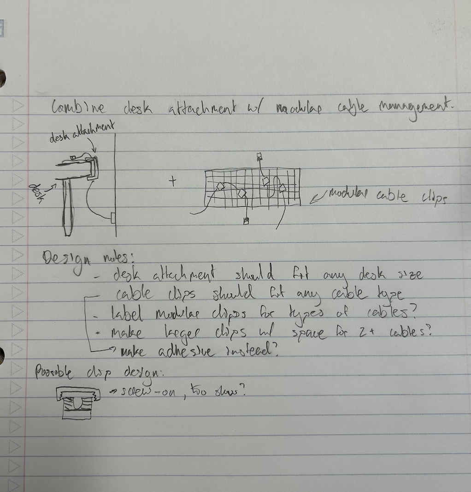
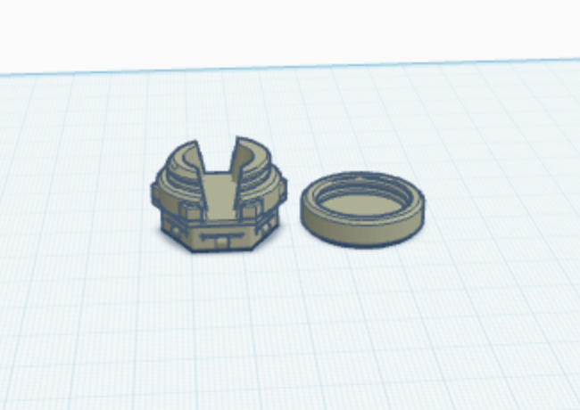
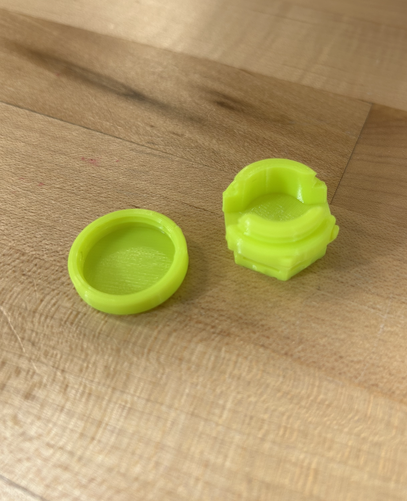
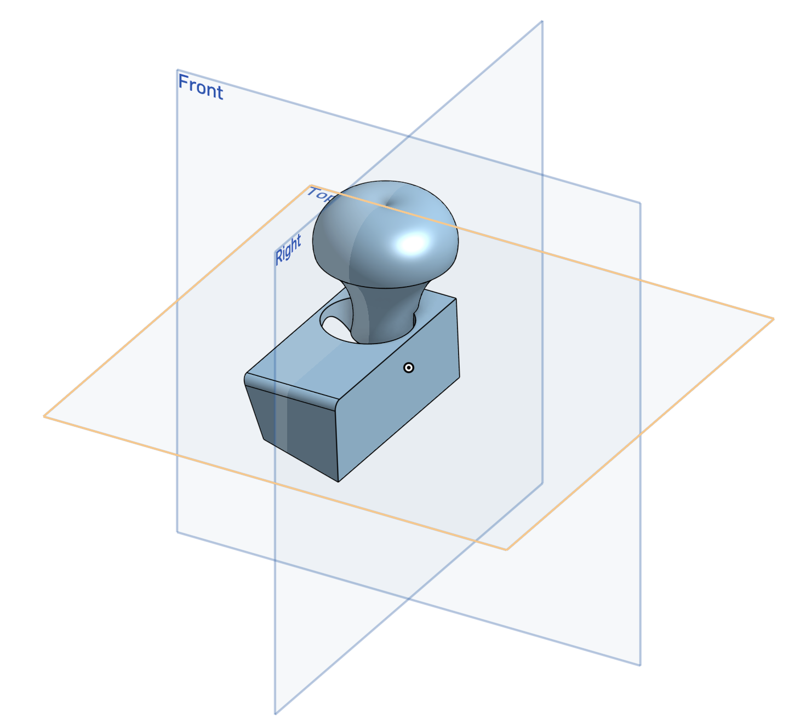
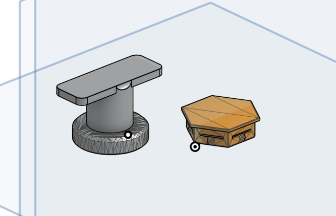
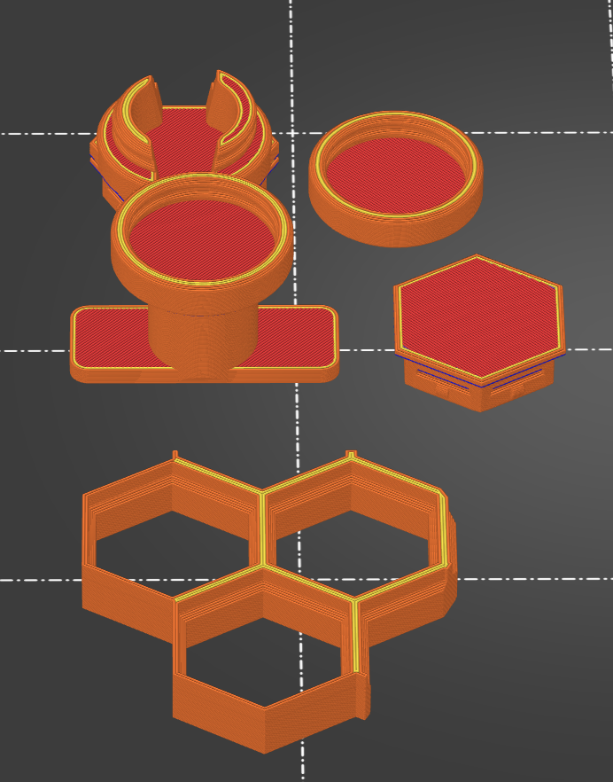
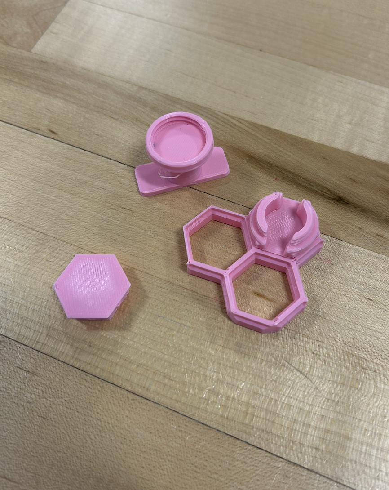

Design Project: Remixing 3D Designs
Printer Settings
Prusa Mini+ with Input Shaper 3D Printer
Generic PLA filament
0.4mm Nozzle
0.2mm Layer Height
Speed Optimization
Automatic Support Generation
Technical Tools
TinkerCAD
OnShape
CAD tutorials
Other previously used tools: Github, Sublime, Prusa Slicer
Overview
Download Write UpIdeation and Research
The intial step in this process was to come up with a plan. My focus was now shifting from printing existing designs to remexing and creating something novel. To acomplish this, I considered many designs of cable management tool, and come up with this idea to combine a few I liked. The sketch includes a modular hexgonal system were pieces snap in, and a compatible screw-on cable guide.
Initial Sketch

While the sketch lacks detail, the ideation is concrete. The design ended up changing quite a bit as iterations occured, but the core principals of this sketch remained.
Remixing in TinkerCAD
To realize my design plan, I first went to TinkerCAD, a simple and easy-to-use 3D design software. I imported two cable manager tools I liked, one with the screw-on system and the other with the correct hexagonal geometery to snapped into the modulor system. I used TinkerCAD to quite literally smoosh them together.
Remix File

This is the model I was left with. It actually quite easy to see where the smoosh happened, as small hexagonal nubs still poke out of the circular screw-on system.
Printed Remix

Finally, I had my first prototype. I was very excited about this print, as I was nervous that the threading in both the cable manager and the cap might fail or not line up correctly. Lucky, the screw-on portion worked perfectly. However, there were some issues with stringy plastic on the underside of the main modular component.
Refining in OnShape
The next step was to take what I learned from my prototype and apply that knowledge in a more complex, parametric 3D design software called OnShape. This software is much similar to SolidWorks or other professional design tools. While more difficult to use, OnShape provides tools and precision that TinkerCAD doesn't. Using these tools, I adressed my main concern with the function of the manager; it had to be easy to remove from the hexagon plane and reattach somewhere else
Tutorials

Because OnShape is a more complex tool than TinkerCAD, it was necessary to gain more experience with the software before jumping into the process. I started with following some simple tutorials on YouTube. I designed a small shallow box, learned the application of certain tool and common features, and created the odd thing pictured here. In this way I became famililiar with the fundamentals of OnShape.
On Shape Additions

To address the ease of use issue I identified after my first print, I added a handle to the cap portion of the cable manager. This was meant to act as a separate addition to the set. Before, the cable manager could only be removed from its hexagon with some serious elbow grease. This design was meant to make that process much easier using some simple leverage. I also removed the screw portion of the cable manager to allow a flat section where command strips or other adhesives could stick and attach to a surface.
Prototyping
Because OnShape is a more complex tool than TinkerCAD, it was necessary to gain more experience with the software before jumping into the process. I started with following some simple tutorials on YouTube. I designed a small shallow box, learned the application of certain tool and common features, and created the odd thing pictured here. In this way I became famililiar with the fundamentals of OnShape.
Failed designs

Unfortunately, I quickly ran into issues when printing my OnShape designs. While these challenges appeared at almost every part of this step in the project, the most troubling one was a dimension mix-up. When importing from TinkerCAD to OnShape and then Slicer, the units my designs were measured in somehow got mixed up. This meant my new additions couldn't fit in my hexagonal system.
Final Product
When I solved the units issue, the rest of this print was relatively smooth sailing. However, even the final design includes some printing flaws, and doesn't work perfectly as intended. Yet!
Modular Cable Management

As is clear to see, the final print still has some issues with adhession when printing the sharp overhang in the removal tool. In addition, the sample hexagonal plane I printed variable thickness in the sides. Both of these deformities may be the cause of inconsistent screw and snap on action. However, most of the time it works pretty well! Further improvement ideas and more detailed project notes can be found in the write-up.